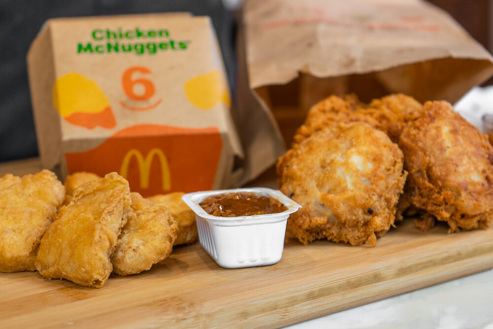

Chicken Nuggers

Description
Chicken Nuggers are a favorite to all. Tasty, scrumptious, and delectable to all. If you're
going to McDonalds, it is asummed that you are getting Chicken Nuggers with your order
However, Chicken Nuggers can be a little unhealthy. Here is a recipe that will allow you
to enjoy the tasty taste of Chicken Nuggers while still eating healthy!
Ingredients
- 20 Ounces Of Boneless, Skinless Chicken Breast
- Egg
- All-Purpose Flour
- Corn Flour
- Water
- 4 Cups Of Vegetable Oil
- Teaspoon of Salt
- Quarter-Teaspoon of Black Pepper
- Place the chicken, half the salt, and all of the pepper in a blender or food processor and blend it on high until smooth.
- Get a large plate and put 1/4 cup of the corn flour on it. Empty the chicken mixture onto the plate and begin to form the shape of the nuggets, coating them in the corn flour.
- After you've shaped the nuggets, put them in the freezer for 20 minutes to firm them up.
- Mix the remaining 3/4 cup of corn flour, 1 cup of all-purpose flour, egg, remaining salt, and water together in a mixing bowl.
- Heat up the vegetable oil in a pot on medium to high heat. Once the oil is hot enough to fry the nuggets, get the chicken out of the freezer.
- Place one nugget at a time into the batter, and then transfer immediately into the oil. Fry for 7 minutes, or until golden brown.
- Repeat this process until all chicken nuggets have been cooked.
Pro Tip: Enjoy your Homemade Chicken Nuggers with a side of
Sweet and Sour Sauce, the best sauce!